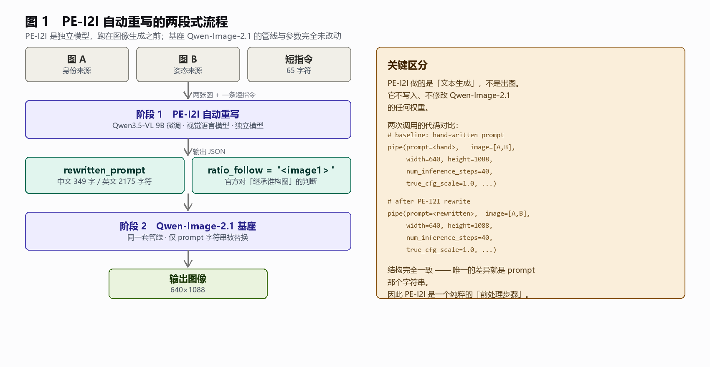
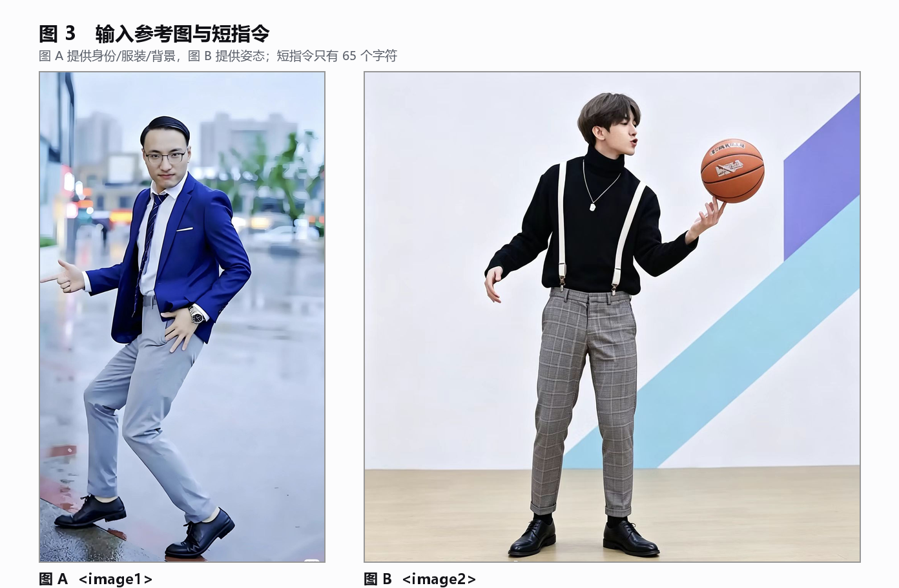
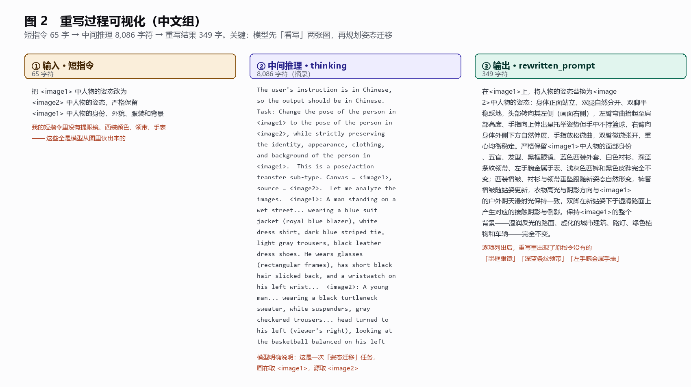
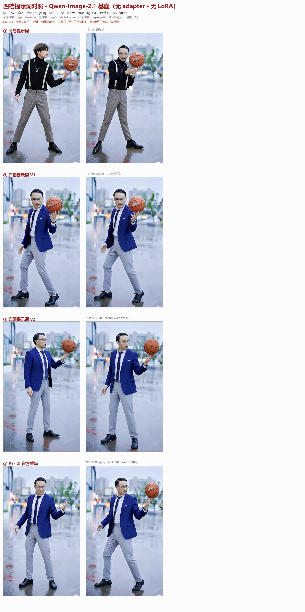
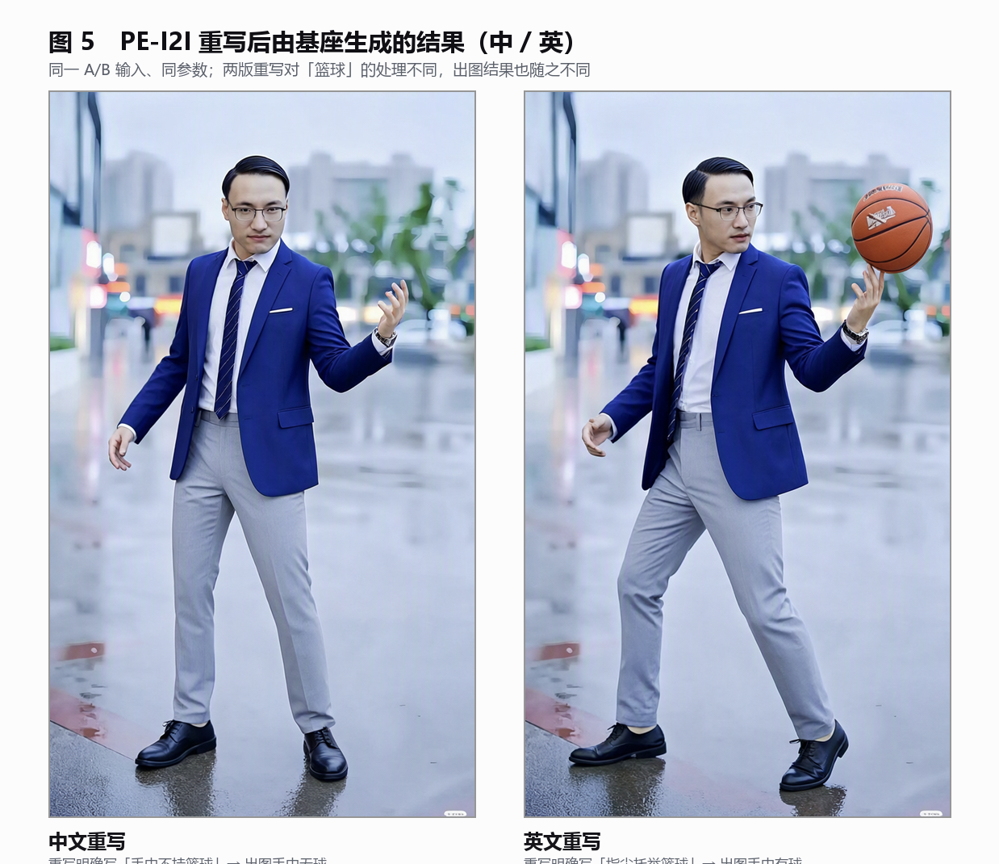

技术实验报告
官方提示词重写模型对姿态迁移任务的影响评估
|
本报告围绕 Qwen 官方随 Qwen-Image-2.1 同期发布的提示词重写模型 PE-I2I 展开。实验以同一组「人物姿态迁移」任务为基准——图 A 提供身份与场景、图 B 提供姿态——对比了四档提示词条件下的出图结果：简易提示词、两版人工详细提示词、以及 PE-I2I 自动重写。 核心结论有三点：其一，PE-I2I 是独立的前处理模型，不修改图像生成管线，它只做文本生成；其二，它的重写质量可与人工撰写的详细提示词持平，价值在于把逐样本手写长提示词这件事自动化；其三，模型在重写时会先逐图描述所见细节，再规划迁移，这既是它效果优于简单扩写的原因，也意味着其输出并非完全确定，关键属性仍需人工核对。 |
PE-I2I 是 Qwen 官方为图像编辑场景提供的提示词重写模型。本章说明它的模型定位、与姊妹模型的分工、调用方式、官方采样参数，以及本地部署时已验证的资源结论。
PE-I2I 的完整标识为 Qwen/Qwen-Image-2.1-PE-I2I，其中 PE 是 Prompt Enhancement（提示词增强）的缩写，I2I 表示面向图生图与图像编辑场景。它不是图像生成模型的一部分，而是一个独立的视觉语言模型。
| 项目 | 说明 |
|---|---|
| 底座架构 | 微调自 Qwen3.5-VL 9B（AutoModelForImageTextToText） |
| 参数规模 | 9B，BF16 精度 |
| 发布时点 | 2026-09-20，与 Qwen-Image-2.1 基座同期发布 |
| 输入 | 系统提示词 + 最多 10 张参考图像 + 一条编辑指令 |
| 输出 | 一段结构化 JSON，含重写后的提示词与宽高比策略 |
| 许可 | Qwen Research License |
官方在 Qwen-Image-2.1 的说明中明确推荐将其作为准备提示词的默认方式，并指出对描述较简单的输入提升明显。
官方同时发布了两个重写模型，按任务类型分流：
| 模型 | 标识 | 用途 |
|---|---|---|
| PE-T2I | Qwen/Qwen-Image-2.1-PE-T2I | 文生图需求展开，输出长英文提示词与推荐宽高比 |
| PE-I2I | Qwen/Qwen-Image-2.1-PE-I2I | 编辑指令展开，接收编辑指令与多张参考图 |
本项目的姿态迁移任务属于图像编辑，因此使用 PE-I2I。
参考图在指令中按 <image1>、<image2> 的顺序引用。调用采用 transformers 的标准聊天模板：
messages = [
{"role": "system", "content": [{"type": "text", "text": system_prompt}]},
{"role": "user", "content": [
{"type": "image", "image": img_A}, # <image1>
{"type": "image", "image": img_B}, # <image2>
{"type": "text", "text": instruction},
]},
]
inputs = processor.apply_chat_template(
messages, add_generation_prompt=True, tokenize=True,
return_dict=True, return_tensors="pt", enable_thinking=True,
)其中 system_prompt 由模型自带的 system_prompt.txt 提供，必须原样使用。
官方给出的两套采样参数并不共用，这一点容易误用：
| 参数 | PE-I2I | PE-T2I |
|---|---|---|
max_new_tokens | 24000 | 16256 |
temperature | 1.0 | 1.0 |
top_p / top_k | 0.95 / 20 | 0.95 / 20 |
presence_penalty | 不设置 | 1.5（抑制重复输出） |
enable_thinking | 开启 | 开启 |
注意
PE-T2I 依赖 presence_penalty=1.5 来避免文生图提示词的重复输出，而 PE-I2I 必须不启用该惩罚项。
本次实测中，权重落盘于 /data/shangguanrz/pic-edit-models/Qwen-Image-2.1-PE-I2I，体积 18.84 GB，共 15 个文件，逐一与官方元数据比对完全一致。
部署方面有两项已验证的结论：其一，项目现有 qwen21 环境（transformers 5.17.0）已包含 Qwen3_5ForConditionalGeneration 实现，无需新建环境；其二，模型加载耗时约 78 秒，单次重写推理耗时中文约 80 秒、英文约 154 秒。
需要指出的是，当前环境未安装 flash-linear-attention 与 causal_conv1d 两个优化内核，推理时回退到参考 PyTorch 实现，上述耗时尚有优化空间。
本章回答两个问题：PE-I2I 在整条生成链路中具体做了什么，以及它与 Qwen-Image-2.1 之间是如何衔接的。其中「只替换 prompt 字符串」一点是本报告最需要澄清的结论。
整个链路可以清晰划分为两个独立阶段：PE-I2I 负责把「短指令」变成「长提示词」，Qwen-Image-2.1 负责根据这段长提示词出图。

图 1 PE-I2I 自动重写的两段式流程
这是本报告最需要澄清的一点——PE-I2I 没有替换 Qwen-Image-2.1 的任何组件。
对比两次生成调用的代码可以看得更清楚：
# 对照组：使用人工撰写的提示词
pipe(prompt=<人工提示词>, image=[A, B], width=640, height=1088,
output_resolution=1088, num_inference_steps=40,
true_cfg_scale=1.0, use_kv_cache=True, generator=gen)
# 实验组：使用 PE-I2I 重写后的提示词
pipe(prompt=<重写后提示词>, image=[A, B], width=640, height=1088,
output_resolution=1088, num_inference_steps=40,
true_cfg_scale=1.0, use_kv_cache=True, generator=gen)两次调用的结构完全一致，唯一的差异是 prompt 参数所指向的字符串。这意味着：
因此，本节实验的对比是干净的——出图差异只可能来自提示词本身。
PE-I2I 的输出 JSON 中包含一个值得单独讨论的字段：
{ "rewritten_prompt": "...", "wh_ratio": "", "ratio_follow": "<image1>" }其中 wh_ratio 与 ratio_follow 互斥，有且仅有一个非空。wh_ratio 用于新建构图时指定宽高比，而 ratio_follow 用于就地编辑时指定输出应继承哪张输入图的宽高比。
本项目此前的任务定义中，「输出应沿用图 A 的竖幅构图」是人工硬性指定的。而本次实验中，PE-I2I 在中英文两次重写中一致返回 ratio_follow: "<image1>"——即模型自行判断输出应继承图 A 的宽高比。
这一结果有两层意义：其一，它印证了项目此前的人工选择是正确的；其二，官方模型对该字段的训练，使「输出构图口径」这一问题有了标准化答案，无需再手工指定。
从生态视角看，Qwen-Image-2.1 的文本编码器本身是 Qwen3-VL 系列，对长而结构化的提示词有良好的承载能力。PE-I2I 与基座同源于 Qwen3.5-VL，两者在语言空间上是一致的——这解释了为什么重写后的长提示词能够被基座有效消化，而不会像对待通用长文本那样出现语义衰减。
本章还原一次完整的重写过程：从输入的一张短指令出发，经过模型的中间推理，最终产出可以直接驱动出图的长提示词。其中模型「先看写、再规划」的行为是理解其效果来源的关键。
本次实验的输入由三部分组成：图 A 提供身份、服装与背景，图 B 提供姿态、头部朝向与表情，以及一条仅 65 个字符的中文短指令。

图 2 输入参考图与短指令
重写的过程可以拆为「输入—中间推理—输出」三段。下面的图完整呈现了这一链路，其中中间列保留了模型思考过程的原文摘录。

图 3 重写过程可视化（中文组）
重写过程中最值得注意的现象是：模型并不是在扩写我的指令，而是先去读两张图。其思考过程（thinking 部分共 8086 字符）的开头几段如实记录了这一点：
thinking 原文摘录
<image1>: A man standing on a wet street... wearing a blue suit jacket (royal blue blazer), white dress shirt, dark blue striped tie, light gray trousers, black leather dress shoes. He wears glasses (rectangular frames), has short black hair slicked back, and a wristwatch on his left wrist...
<image2>: A young man... wearing a black turtleneck sweater, white suspenders, gray checkered trousers... head turned to his left (viewer's right), looking at the basketball balanced on his left hand's fingertips...
这些细节在我的短指令里一个都没有出现。眼镜、西装颜色、领带样式、手表、发型、两条手臂的具体姿态——全部是模型从图像中读出来并写入重写结果的。
这解释了为什么它的效果能够追平人工撰写的长提示词：人工撰写长提示词的实质工作，正是「看图并逐项描述」，而 PE-I2I 把这一步自动化了。
| 项目 | 中文组 | 英文组 |
|---|---|---|
| 输入指令长度 | 65 字符 | 182 字符 |
| 中间推理长度 | 8,086 字符 | — |
| 重写输出长度 | 349 字符 | 2,175 字符 |
| 扩写倍数 | 5.4 倍 | 12.0 倍 |
ratio_follow | <image1> | <image1> |
中文组的合并结果如下（节选）：
在 <image1> 上，将人物的姿态替换为 <image2> 中人物的姿态：身体正面站立、双腿自然分开、双脚平稳踩地，头部转向其左侧（画面右侧），左臂弯曲抬起至肩部高度、手指向上伸出呈托举姿势但手中不持篮球，右臂向身体外侧下方自然伸展……严格保留 <image1> 中人物的面部身份、五官、发型、黑框眼镜、蓝色西装外套、白色衬衫、深蓝条纹领带、左手腕金属手表、浅灰色西裤和黑色皮鞋完全不变；西装褶皱、衬衫与领带垂坠跟随新姿态自然形变……保持 <image1> 的整个背景——湿润反光的路面、虚化的城市建筑、路灯、绿色植物和车辆——完全不变。
中英文两次重写在「篮球」这一属性上给出了相反的判断：
<image2>」——理解为姿态包含手中物体。出图结果与两版重写完全对应：中文版手中无球，英文版手中有球。
这一现象说明：PE-I2I 的输出并非完全确定，同一多模态模型在不同语言下可能对边界属性产生不同理解。因此，重写结果虽可直接使用，但对关键属性仍需人工核对——这是落地时必须保留的一道校验。
本章给出四档提示词条件下的出图对照结果。所有对比在完全相同的生成参数下完成，唯一变量为提示词本身。
本节所有对比均在同一条件下完成，各项参数完全一致，唯一变量为提示词。
| 项目 | 设置 |
|---|---|
| 图像生成模型 | Qwen-Image-2.1 基座（models/Qwen-Image-2.1） |
| 是否加载 adapter | 否 |
| 是否加载 LoRA | 否 |
| 参考图 | image=[A, B]，多图输入，不做拼接 |
| 输出分辨率 | 640 × 1088 |
| 采样步数 | 40 |
true_cfg_scale | 1.0 |
| 随机种子 | 42 |
use_kv_cache | 开启 |
output_resolution | 1088 |
提示词重写侧的条件为：
| 项目 | 设置 |
|---|---|
| 重写模型 | Qwen/Qwen-Image-2.1-PE-I2I |
| 采样参数 | max_new_tokens=24000、temperature=1.0、top_p=0.95、top_k=20 |
| thinking | 开启 |
presence_penalty | 不设置 |
四个档位分别为：简易提示词、人工详细提示词 V1（六段式）、人工详细提示词 V2（含身份锁定最高优先级的长六段式）、以及 PE-I2I 自动重写。每档均包含中文与英文两版。

图 4 四档提示词条件下的出图对照（左列为中文组，右列为英文组）
各档结果判定如下：
| 档位 | 身份与服装保持 | 场景保持 | 备注 |
|---|---|---|---|
| ① 简易提示词 | 失败 | 失败 | 抄用了图 B 的服装（黑高领、白背带、格纹裤） |
| ② 人工详细提示词 V1 | 成功 | 成功 | 保住图 A 的蓝西装与眼镜 |
| ③ 人工详细提示词 V2 | 成功 | 成功 | 与 V1 相当，身份锁定条款更细 |
| ④ PE-I2I 自动重写 | 成功 | 成功 | 质量与人工详细版相当 |
结论清晰：简易提示词在两个维度上同时失败，而详细提示词与自动重写均能保住图 A 的身份与场景。这再次印证了本项目此前反复观察到的规律——提示词的信息量对该任务具有决定性影响。
下图放大展示 PE-I2I 重写后的两版结果。如 3.5 节所述，两版重写对「篮球」的处理不同，出图结果也随之不同——左侧手中无球，右侧手中有球。

图 5 PE-I2I 重写后由基座生成的结果（左：中文重写，右：英文重写）
PE-I2I 在本任务上的定位可以明确为「替代人工撰写长提示词」。它的产出质量与人工详细提示词相当，但成本从「每样本手写数百字」降到「一条短指令」，对需要规模化跑样本的实验是刚需。
同时需要明确其边界。其一，PE-I2I 的价值集中在提示词工程这一层，它无法弥补模型本身在姿态控制、身份保持等方面的能力上限——本项目正在推进的 adapter 路线与它并不冲突，两者作用在不同层面。其二，其输出存在语言间的不确定性（如篮球分歧），关键属性仍需核对。其三，重写带来的收益主要体现在抑制模型向参考图 B 坍缩这一具体失败模式上，对于提示词本就足够详尽的场景，增量有限。
| 项目 | 路径 |
|---|---|
| 重写脚本 | experiments/16-test/run_pei2i.py |
| 重写结果与完整思考过程 | experiments/16-test/stage6_pei2i/ |
| 输入参考图 | experiments/16-test/source/p-A/、p-B/ |
| PE-I2I 权重 | /data/shangguanrz/pic-edit-models/Qwen-Image-2.1-PE-I2I |